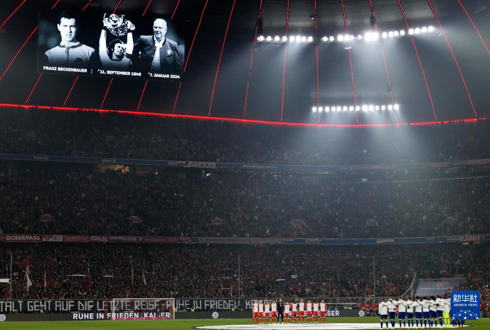
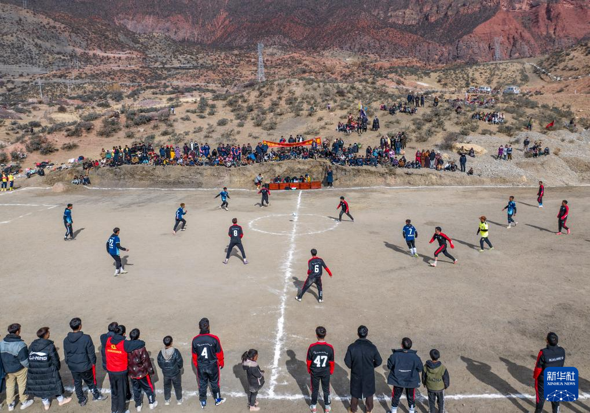

-
2024年1月20日，法国选手塞巴斯蒂安·伍德布里奇在比赛中。当日，2024年江原道冬青奥会跳台滑雪男子个人标准台比赛在韩国平昌进行。
-

2024年1月12日，双方球员在比赛前为1月7日去世的德国足坛名宿弗朗茨·贝肯鲍尔默哀。当日，在2023-2024赛季德国足球甲级联赛第17轮比赛中，拜仁慕尼黑队主场3比0战胜霍芬海姆队。
-

2024年1月21日，球员在马利村的足球场上比赛（无人机照片）西藏昌都市洛隆县马利镇平均海拔约3700米，“马利镇第七届‘迎新杯’足球赛”在该镇马利村一座简易球场上展开。